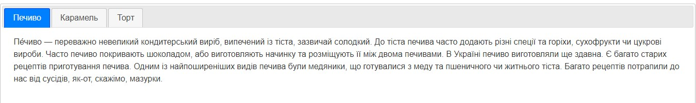
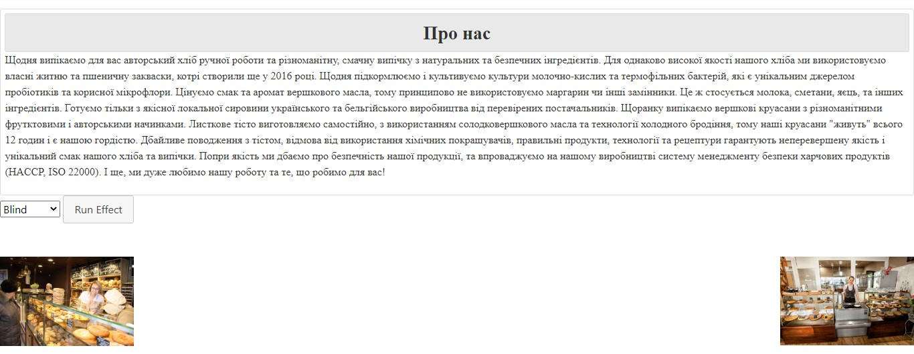
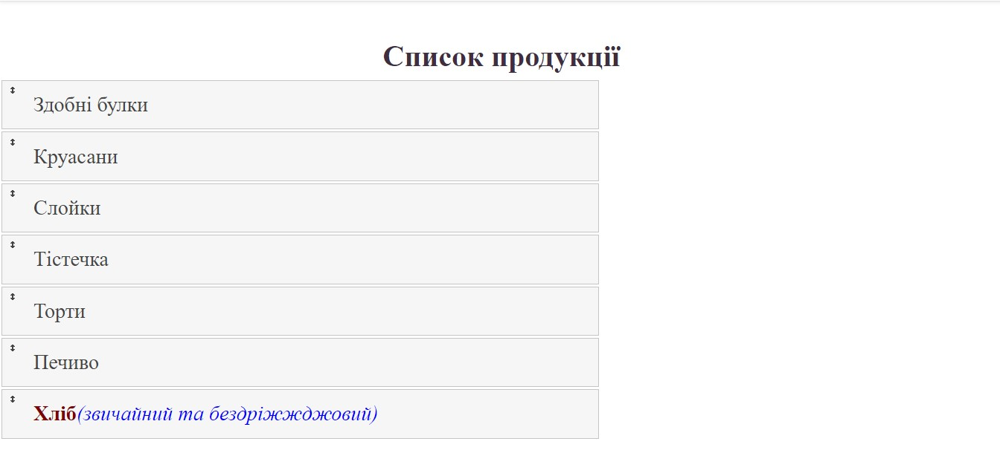

Динамічні елементи

<!DOCTYPE html>
<html lang="en" dir="ltr">
<link rel="stylesheet" href="https://stackpath.bootstrapcdn.com/bootstrap/4.3.1/css/bootstrap.min.css" integrity="sha384-ggOyR0iXCbMQv3Xipma34MD+dH/1fQ784/j6cY/iJTQUOhcWr7x9JvoRxT2MZw1T" crossorigin="anonymous">
<head>
<meta charset="utf-8">
<meta name="viewport" content="width=device-width, initial-scale=1">
<title>Пекарня</title>
<link rel="stylesheet" href="//code.jquery.com/ui/1.12.1/themes/base/jquery-ui.css">
<link rel="stylesheet" href="/resources/demos/style.css">
<script src="https://code.jquery.com/jquery-1.12.4.js"></script>
<script src="https://code.jquery.com/ui/1.12.1/jquery-ui.js"></script>
<script>
$( function() {
$( "#tabs" ).tabs();
} );
</script>
</head>
<body>
<div class="d-flex flex-column flex-md-row align-items-center p-3 px-md-4 mb-3 bg-white border-bottom shadow-sm">
<h5 class="my-0 mr-md-auto font-weight-normal">Пекарня</h5>
<nav class="my-2 my-md-0 mr-md-3">
<a class="p-2 text-dark" href="about.html">Про нас</a>
<a class="p-2 text-dark" href="mainpage.html">Основна сторінка</a>
<a class="p-2 text-dark" href="catalog.html">Каталог</a>
<a class="p-2 text-dark" href="support.php">Служба підтримки</a>
<a class="p-2 text-dark" href="log.html">Особистий кабінет</a>
</nav>
</div>
<center>
<div class="mt-3">
<img src="unnamed.jpg" alt="">
</div>
</center>
<div class="card-deck mb-3 text-center">
<div class="card mb-4 shadow-sm">
<div class="card-header">
<h4 class="my-0 font-weight-normal">Печиво</h4>
</div>
<div class="card-body">
<h1 class="card-title pricing-card-title">50 грн <small class="text-muted"></small></h1>
<ul class="list-unstyled mt-3 mb-4">
<li>Печиво</li>
<li>Ціна за 1 кг</li>
</ul>
<button type="button" class="btn btn-lg btn-block btn-primary">Придбати</button>
</div>
</div>
<div class="card mb-4 shadow-sm">
<div class="card-header">
<h4 class="my-0 font-weight-normal">Карамель</h4>
</div>
<div class="card-body">
<h1 class="card-title pricing-card-title">80 грн <small class="text-muted"></small></h1>
<ul class="list-unstyled mt-3 mb-4">
<li>Карамель</li>
<li>Ціна за 1 кг</li>
</ul>
<button type="button" class="btn btn-lg btn-block btn-primary">Придбати</button>
</div>
</div>
<div class="card mb-4 shadow-sm">
<div class="card-header">
<h4 class="my-0 font-weight-normal">Торт</h4>
</div>
<div class="card-body">
<h1 class="card-title pricing-card-title">200 грн <small class="text-muted"></small></h1>
<ul class="list-unstyled mt-3 mb-4">
<li>Торт</li>
<li>Ціна за 1 кг</li>
</ul>
<button type="button" class="btn btn-lg btn-block btn-primary">Придбати</button>
</div>
</div>
</div>
<div id="tabs">
<ul>
<li><a href="#tabs-1">Печиво</a></li>
<li><a href="#tabs-2">Карамель</a></li>
<li><a href="#tabs-3">Торт</a></li>
</ul>
<div id="tabs-1">
<p>Пе́чиво — переважно невеликий кондитерський виріб, випечений із тіста, зазвичай солодкий.
До тіста печива часто додають різні спеції та горіхи, сухофрукти чи цукрові вироби. Часто печиво покривають шоколадом, або виготовляють начинку та розміщують її між двома печивами.
В Україні печиво виготовляли ще здавна. Є багато старих рецептів приготування печива. Одним із найпоширеніших видів печива були медяники, що готувалися з меду та пшеничного чи житнього тіста.
Багато рецептів потрапили до нас від сусідів, як-от, скажімо, мазурки.</p>
</div>
<div id="tabs-2">
<p>Караме́ль — це десертний інгредієнт, що являє собою колоїдний розчин вареного цукру. Буває коричневого кольору різних відтінків. Використовується для ароматизації цукерок і напоїв, наприклад Кока-коли.
Зазвичай застосовується як харчовий барвник і має класифікаційний номер E150.
За однією з версій назва «карамель» походить від арабського вислову «курат-аль-миль» — «кулька солодкої солі». За іншою — від латинського «калламелус» — так у середньовічній Європі називали цукрову тростину[1].
Виготовляється в процесі повільного нагрівання цукру до температури, близької до 170 °C.</p>
</div>
<div id="tabs-3">
<p>Торт (італ. torta) — кондитерський виріб, зазвичай зі здобного тіста, з кремом, фруктами тощо. Торт звичайно складається з декількох коржів (з бісквітного, листкового або іншого тіста) із прошарками із крему. Зверху торт прикрашається візерунками із крему та фруктів.
Торт може виступати як окремим кулінарним виробом зі своєю унікальною рецептурою[1], так і мати одночасне святкове призначення та оформлення з приводу урочистих подій.
Зазвичай, торт є традиційною святковою стравою на весіллях та днях народження. На весілля торт прикрашають фігурками наречених, розташовуючи їх на верхівці торта. На день народження іменинний торт прикрашають свічками у кількості, що дорівнює віку іменинника, або спеціальними свічками з цифровим зображенням його віку, є також безліч варіантів оформлення тортів які ілюструють професійну діяльність особи яку вітають — торти в оформленні яких є логотипи організацій, написи кремом і т.д.
Торти часто використовують як альтернативну зброю під час проведення яєчних атак для демонстрації громадської недовіри до знаних людей. Традицію кидати в відомих осіб тортами заснував бельгієць Ноель Годен — лідер руху «Міжнародні тістечкові бригади», від активістів якого постраждали такі особи, як Білл Гейтс, Мішель Камдессю, Жан-Люк Годар та інші.</p>
</div>
</div>
</body>
</html>
"mainpage.html"

<!DOCTYPE html>
<html lang="en" dir="ltr">
<link rel="stylesheet" href="https://stackpath.bootstrapcdn.com/bootstrap/4.3.1/css/bootstrap.min.css" integrity="sha384-ggOyR0iXCbMQv3Xipma34MD+dH/1fQ784/j6cY/iJTQUOhcWr7x9JvoRxT2MZw1T" crossorigin="anonymous">
<link rel="stylesheet" href="style.css" type="text/css"/>
<head>
<meta charset="utf-8">
<meta name="viewport" content="width=device-width, initial-scale=1">
<title>jQuery UI Effects - Effect demo</title>
<link rel="stylesheet" href="//code.jquery.com/ui/1.12.1/themes/base/jquery-ui.css">
<link rel="stylesheet" href="/resources/demos/style.css">
<style>
.spacer { height: 50px; width: 100% }
#button { padding: .5em 1em; text-decoration: none;}
#effect { padding: 0.4em; position: relative; }
#effect h3 { margin: 0; padding: 0.4em; text-align: center; }
.ui-effects-transfer { border: 2px dotted gray; }
</style>
<script src="https://code.jquery.com/jquery-1.12.4.js"></script>
<script src="https://code.jquery.com/ui/1.12.1/jquery-ui.js"></script>
<script>
$( function() {
// run the currently selected effect
function runEffect() {
// get effect type from
var selectedEffect = $( "#effectTypes" ).val();
// Most effect types need no options passed by default
var options = {};
// some effects have required parameters
if ( selectedEffect === "scale" ) {
options = { percent: 50 };
} else if ( selectedEffect === "transfer" ) {
options = { to: "#button", className: "ui-effects-transfer" };
} else if ( selectedEffect === "size" ) {
options = { to: { width: 200, height: 60 } };
}
// Run the effect
$( "#effect" ).effect( selectedEffect, options, 500, callback );
};
// Callback function to bring a hidden box back
function callback() {
setTimeout(function() {
$( "#effect" ).removeAttr( "style" ).hide().fadeIn();
}, 1000 );
};
// Set effect from select menu value
$( "#button" ).on( "click", function() {
runEffect();
return false;
});
} );
</script>
<title>Каталог</title>
</head>
<body>
<div class="d-flex flex-column flex-md-row align-items-center p-3 px-md-4 mb-3 bg-white border-bottom shadow-sm">
<h5 class="my-0 mr-md-auto font-weight-normal">Пекарня</h5>
<nav class="my-2 my-md-0 mr-md-3">
<a class="p-2 text-dark" href="about.html">Про нас</a>
<a class="p-2 text-dark" href="mainpage.html">Основна сторінка</a>
<a class="p-2 text-dark" href="catalog.html">Каталог</a>
<a class="p-2 text-dark" href="support.php">Служба підтримки</a>
<a class="p-2 text-dark" href="log.html">Особистий кабінет</a>
</nav>
</div>
<!-- <P name="info">Щодня випікаємо для вас авторський хліб ручної роботи та різноманітну, смачну випічку з натуральних та безпечних інгредієнтів.
Для однаково високої якості нашого хліба ми використовуємо власні житню та пшеничну закваски, котрі створили ще у 2016 році. Щодня підкормлюємо і культивуємо культури молочно-кислих та термофільних бактерій, які є унікальним джерелом пробіотиків та корисної мікрофлори.
Цінуємо смак та аромат вершкового масла, тому принципово не використовуємо маргарин чи інші замінники. Це ж стосується молока, сметани, яєць, та інших інгредієнтів. Готуємо тільки з якісної локальної сировини українського та бельгійського виробництва від перевірених постачальників.
Щоранку випікаємо вершкові круасани з різноманітними фрутктовими і авторськими начинками. Листкове тісто виготовляємо самостійно, з використанням солодковершкового масла та технології холодного бродіння, тому наші круасани "живуть" всього 12 годин і є нашою гордістю.
Дбайливе поводження з тістом, відмова від використання хімічних покращувачів, правильні продукти, технології та рецептури гарантують неперевершену якість і унікальний смак нашого хліба та випічки.
Попри якість ми дбаємо про безпечність нашої продукції, та впроваджуємо на нашому виробництві систему менеджменту безпеки харчових продуктів (HACCP, ISO 22000).
І ще, ми дуже любимо нашу роботу та те, що робимо для вас!</P> -->
<div class="toggler">
<div id="effect" class="ui-widget-content ui-corner-all">
<h3 class="ui-widget-header ui-corner-all">Про нас</h3>
<p>
Щодня випікаємо для вас авторський хліб ручної роботи та різноманітну, смачну випічку з натуральних та безпечних інгредієнтів.
Для однаково високої якості нашого хліба ми використовуємо власні житню та пшеничну закваски, котрі створили ще у 2016 році. Щодня підкормлюємо і культивуємо культури молочно-кислих та термофільних бактерій, які є унікальним джерелом пробіотиків та корисної мікрофлори.
Цінуємо смак та аромат вершкового масла, тому принципово не використовуємо маргарин чи інші замінники. Це ж стосується молока, сметани, яєць, та інших інгредієнтів. Готуємо тільки з якісної локальної сировини українського та бельгійського виробництва від перевірених постачальників.
Щоранку випікаємо вершкові круасани з різноманітними фрутктовими і авторськими начинками. Листкове тісто виготовляємо самостійно, з використанням солодковершкового масла та технології холодного бродіння, тому наші круасани "живуть" всього 12 годин і є нашою гордістю.
Дбайливе поводження з тістом, відмова від використання хімічних покращувачів, правильні продукти, технології та рецептури гарантують неперевершену якість і унікальний смак нашого хліба та випічки.
Попри якість ми дбаємо про безпечність нашої продукції, та впроваджуємо на нашому виробництві систему менеджменту безпеки харчових продуктів (HACCP, ISO 22000).
І ще, ми дуже любимо нашу роботу та те, що робимо для вас!
</p>
</div>
</div>
<select name="effects" id="effectTypes">
<option value="blind">Blind</option>
<option value="bounce">Bounce</option>
<option value="clip">Clip</option>
<option value="drop">Drop</option>
<option value="explode">Explode</option>
<option value="fade">Fade</option>
<option value="fold">Fold</option>
<option value="highlight">Highlight</option>
<option value="puff">Puff</option>
<option value="pulsate">Pulsate</option>
<option value="scale">Scale</option>
<option value="shake">Shake</option>
<option value="size">Size</option>
<option value="slide">Slide</option>
<option value="transfer">Transfer</option>
</select>
<button id="button" class="ui-state-default ui-corner-all">Run Effect</button>
<div class="spacer"></div>
<img src="https://www.ryazagro.ru/upload/iblock/cfb/pk_bt_2.jpg" class="floated-l">
<img src="https://ubr.ua/img/article/38445/15_main.jpeg" class="floated-r">
</body>
</html>
"about.html"

<!DOCTYPE html>
<html lang="en" dir="ltr">
<link rel="stylesheet" href="https://stackpath.bootstrapcdn.com/bootstrap/4.3.1/css/bootstrap.min.css" integrity="sha384-ggOyR0iXCbMQv3Xipma34MD+dH/1fQ784/j6cY/iJTQUOhcWr7x9JvoRxT2MZw1T" crossorigin="anonymous">
<link rel="stylesheet" href="style.css" type="text/css"/>
<head>
<meta charset="utf-8">
<meta name="viewport" content="width=device-width, initial-scale=1">
<link rel="stylesheet" href="//code.jquery.com/ui/1.12.1/themes/base/jquery-ui.css">
<link rel="stylesheet" href="/resources/demos/style.css">
<style>
#sortable { list-style-type: none; margin: 0; padding: 0; width: 60%; }
#sortable li { margin: 0 3px 3px 3px; padding: 0.4em; padding-left: 1.5em; font-size: 1.4em; }
#sortable li span { position: absolute; margin-left: -1.3em; }
</style>
<script src="https://code.jquery.com/jquery-1.12.4.js"></script>
<script src="https://code.jquery.com/ui/1.12.1/jquery-ui.js"></script>
<script>
$( function() {
$( "#sortable" ).sortable();
$( "#sortable" ).disableSelection();
} );
</script>
<title>Каталог</title>
</head>
<body>
<div class="d-flex flex-column flex-md-row align-items-center p-3 px-md-4 mb-3 bg-white border-bottom shadow-sm">
<h5 class="my-0 mr-md-auto font-weight-normal">Пекарня</h5>
<form autocomplete="off" action="../action_page.php">
<div class="autocomplete" style="width:300px;">
<input id="myInput" type="text" name="words" placeholder="Введите текст">
</div>
</form>
<nav class="my-2 my-md-0 mr-md-3">
<a class="p-2 text-dark" href="about.html">Про нас</a>
<a class="p-2 text-dark" href="mainpage.html">Основна сторінка</a>
<a class="p-2 text-dark" href="catalog.html">Каталог</a>
<a class="p-2 text-dark" href="support.php">Служба підтримки</a>
<a class="p-2 text-dark" href="log.html">Особистий кабінет</a>
</nav>
</div>
<script>
function autocomplete(inp, arr) {
var currentFocus;
inp.addEventListener("input", function(e) {
var a, b, i, val = this.value;
closeAllLists();
if (!val) { return false;}
currentFocus = -1;
a = document.createElement("DIV");
a.setAttribute("id", this.id + "autocomplete-list");
a.setAttribute("class", "autocomplete-items");
this.parentNode.appendChild(a);
for (i = 0; i < arr.length; i++) {
if (arr[i].substr(0, val.length).toUpperCase() == val.toUpperCase()) {
b = document.createElement("DIV");
b.innerHTML = "<strong>" + arr[i].substr(0, val.length) + "</strong>";
b.innerHTML += arr[i].substr(val.length);
b.innerHTML += "<input type='hidden' value='" + arr[i] + "'>";
b.addEventListener("click", function(e) {
inp.value = this.getElementsByTagName("input")[0].value;
closeAllLists();
});
a.appendChild(b);
}
}
});
function closeAllLists(elmnt) {
var x = document.getElementsByClassName("autocomplete-items");
for (var i = 0; i < x.length; i++) {
if (elmnt != x[i] && elmnt != inp) {
x[i].parentNode.removeChild(x[i]);
}
}
}
document.addEventListener("click", function (e) {
closeAllLists(e.target);
});
}
var words = ["Здібні булки","Круасани","Слойки","Тістечка","Торти","Печиво","Хліб"];
autocomplete(document.getElementById("myInput"), words);
</script>
<h1 class="head">Список продукції</h1>
<ul id="sortable">
<li class="ui-state-default"><span class="ui-icon ui-icon-arrowthick-2-n-s"></span>Здобні булки</li>
<li class="ui-state-default"><span class="ui-icon ui-icon-arrowthick-2-n-s"></span>Круасани</li>
<li class="ui-state-default"><span class="ui-icon ui-icon-arrowthick-2-n-s"></span>Слойки</li>
<li class="ui-state-default"><span class="ui-icon ui-icon-arrowthick-2-n-s"></span>Тістечка</li>
<li class="ui-state-default"><span class="ui-icon ui-icon-arrowthick-2-n-s"></span>Торти</li>
<li class="ui-state-default"><span class="ui-icon ui-icon-arrowthick-2-n-s"></span>Печиво</li>
<li class="ui-state-default"><span class="ui-icon ui-icon-arrowthick-2-n-s"></span><b>Хліб</b><i>(звичайний та бездріжжджовий)</i></li>
</ul>
<br>
<br>
<div class="imager">
<img src="https://бизнесидея.рф/wp-content/uploads/2018/01/biznes-plan-dlya-mini-pekarni.jpg" id="breadpic">
<img src="https://moybiznes.org/wp-content/uploads/bulochnaya-678x381.jpg" id="pikcha2">
</div>
</body>
</html>
"catalog.html"